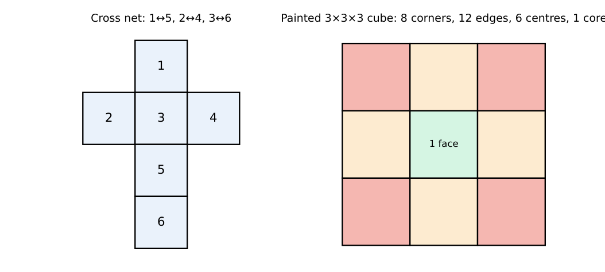
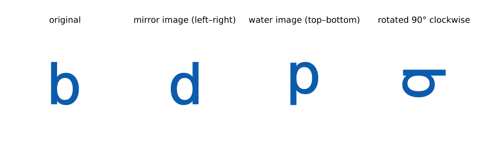
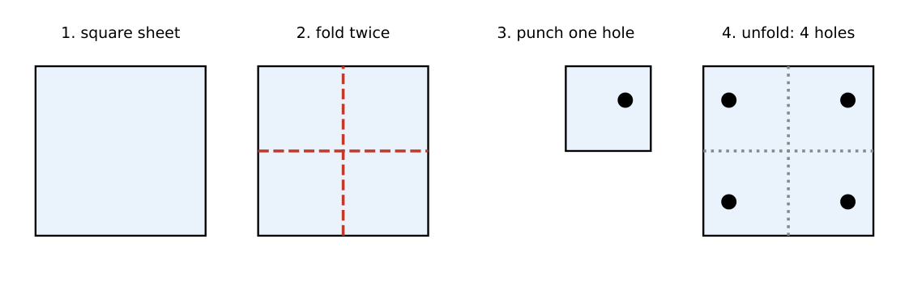

Spatial Aptitude
In this chapter
Cube nets and dice, painted-cube counting, rotation and reflection of figures and letters, mirror and water images (including clocks), paper folding with punched holes, and pattern recognition in figure series. The rules are mechanical once learned.
10.1 Spatial visualization: cubes and dice

A cube has \(6\) faces, \(12\) edges, \(8\) vertices. In a net, faces separated by exactly one face in a straight line are opposite. On a standard die opposite faces sum to \(7\) (\(1\!-\!6\), \(2\!-\!5\), \(3\!-\!4\)). Three faces meeting at a corner are never opposite.
Painted cube. An \(n\times n\times n\) cube painted on all faces and cut into \(n^3\) unit cubes has
3 faces painted: \(8\) (corners); 2 faces: \(12(n-2)\); 1 face: \(6(n-2)^2\); 0 faces: \((n-2)^3\).
For \(n=4\): \(8\), \(24\), \(24\), \(8\) (total \(64\)). For \(n=5\): unpainted \(3^3=27\).
Counting blocks in a stack: count the cubes in each column, then add; hidden blocks under a visible one are still present. A cube cut by \(k\) plane cuts in each direction gives \((k+1)^3\) pieces.
10.2 Rotation and reflection

Rotation turns the whole figure; a \(90^\circ\) clockwise turn sends “up” to “right”. Four \(90^\circ\) turns return the figure; \(180^\circ\) swaps up/down and left/right at once.
Mirror image (vertical mirror at the side): left and right are exchanged, the top stays at the top (\(b\to d\)). Water image (mirror below, a horizontal mirror): top and bottom are exchanged (\(b\to p\)).
Clocks: mirror image of time \(t\) is \(11{:}60-t\) (\(3{:}15\to8{:}45\)); water image is \(6{:}00-t\) (\(3{:}15\to2{:}45\)).
A mirror image is not the same as a \(180^\circ\) rotation (rotating \(b\) by \(180^\circ\) gives \(q\), mirroring gives \(d\)).
Symmetry. A regular \(n\)-gon has \(n\) lines of symmetry and rotational symmetry of order \(n\) (a hexagon: \(6\) lines; a square: \(4\) lines and \(4\) rotations including the identity). A circle has infinitely many.
10.3 Paper folding and punching

Unfold in the reverse order of folding; at each unfold, reflect every hole (and every cut) across the fold line. A hole punched through \(k\) layers produces \(k\) holes after unfolding. Folding in half twice makes \(4\) layers, so a punch away from the folds gives \(4\) holes; a hole on a fold line is shared by the two layers it joins (fewer holes).
Cuts on a folded paper become mirror-symmetric shapes across the folds.
10.4 Pattern recognition
Look for one change per step: rotation by a fixed angle (\(45^\circ\) or \(90^\circ\) per frame), alternate shading, an element added or removed each step, movement around a square (clockwise or anticlockwise by a fixed number of positions), or reflection every second frame. If two features change, track them separately and test each against the options. The next figure completes both patterns.
(i) Confusing a mirror image with a rotated figure. (ii) Forgetting that the mirror reverses left–right only (up–down for a water image). (iii) Counting only visible cubes. (iv) Unfolding in the wrong order. (v) Treating adjacent faces of a net as opposite.
For dice, use opposite faces sum to \(7\). For painted cubes use \(8,\ 12(n-2),\ 6(n-2)^2,\ (n-2)^3\). For clocks apply \(11{:}60-t\). For folding, count the layers; the number of holes equals the number of layers punched. For rotation, track one distinguishing mark (a dot or corner) through the transformation.
10.5 GATE problems
Q1. A cube has (A) 6 faces, 12 edges, 8 vertices (B) 8 faces, 12 edges, 6 vertices (C) 6 faces, 8 edges, 12 vertices (D) 12 faces, 6 edges, 8 vertices.
Q2. The mirror image (mirror at the right side) of the letter “b” looks like (A) d (B) p (C) q (D) b.
Q3. The water image of “b” looks like (A) d (B) q (C) p (D) b.
Q4. On a standard die, if \(2\) is on top the bottom face is (A) 3 (B) 4 (C) 5 (D) 6.
Answers: Q1 (A). Q2 (A). Q3 (C). Q4 (C).
Q5. A \(4\times4\times4\) cube is painted on all faces and cut into \(64\) unit cubes. The number with exactly two faces painted is (A) 8 (B) 12 (C) 24 (D) 36.
Q6. A square sheet is folded in half twice, one hole is punched away from all folds, and the sheet is opened. The number of holes is (A) 1 (B) 2 (C) 3 (D) 4.
Q7. A clock shows \(3{:}15\). Its mirror image shows (A) 8:45 (B) 9:15 (C) 2:45 (D) 8:15.
Answers: Q5 (C): \(12\times2\). Q6 (D). Q7 (A): \(11{:}60-3{:}15\).
Q8. A \(5\times5\times5\) cube is painted outside and cut into unit cubes. The number with no painted face is .
Q9. The number of lines of symmetry of a regular hexagon is .
Q10. The number of rotations (including the identity) that map a square onto itself is .
Answers: Q8: \(3^3=27\). Q9: 6. Q10: 4.
Q11. Which are true? (A) A mirror image exchanges left and right. (B) A water image exchanges top and bottom. (C) A \(360^\circ\) rotation returns the figure. (D) A mirror image equals a \(180^\circ\) rotation.
Answers: Q11: (A), (B), (C).
T1. Painted \(3\times3\times3\) cube: cubes with one painted face? T2. Water image of \(3{:}15\)? T3. Holes after one fold and one punch away from the fold?
Answers: T1: \(6\). T2: \(2{:}45\). T3: \(2\).
- Cube: \(6/12/8\); die opposite faces sum to \(7\); painted cube \(8,12(n-2),6(n-2)^2,(n-2)^3\).
- Mirror swaps left–right (\(b\to d\)); water swaps top–bottom (\(b\to p\)); clock mirror \(11{:}60-t\), water \(6{:}00-t\).
- Regular \(n\)-gon: \(n\) lines of symmetry, \(n\) rotations.
- Folding: unfold in reverse order, reflect holes over each fold; holes \(=\) layers punched.